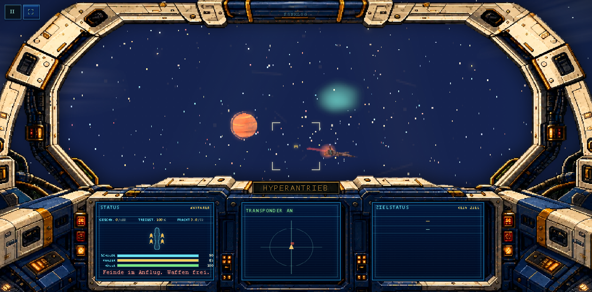
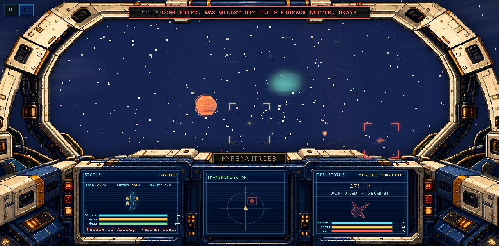

Pieces
| Piece | Bar ref | Status | Round | Last verdict |
|---|---|---|---|---|
| 1 · Laser bolts + impact FX | ed-03, ed-12, ed-13 | builder round 1 | 1 | baseline: bolts are sub-2px specks at combat range |
| 2 · Rockets / missiles + exhaust | ed-03 (smoke trails), ed-16 | queued | — | baseline: missile is a dot, no trail |
| 3 · Planet surfaces (Azure + Vesper) | ed-02, ed-10, ed-15 | queued | — | baseline: flat banded ball, magenta blotches |
| 4 · Ring of Azure | ed-05, ed-15 | queued | — | baseline: one flat grey band, no gaps/shadow |
| 5 · Clouds (cheap fluid-style drift) | ed-02, ed-15 | queued | — | baseline: static blotch texture, slow spin |
| 6 · Perf gate (all devices) | measurable half | queued | — | must hold baseline frame times |
Baseline (before) — captured this round


Round log
R1 · gauntlet started · bar picked: Elite Dangerous · refs fetched (16 stills, Steam CDN) · capture rig built (gauntlet/capture.mjs, 7 scenes, CDP + ws client, Chrome needs --no-sandbox-class elevation on this machine) · baseline captured clean (no page errors) · builder round 1 dispatched: laser bolts + impact FX.
Watch this page: refresh after each round. Shots are re-captured per round under gauntlet/shots/<piece>-r<n>/; blind A/B pairs are staged for the critic with labels stripped.